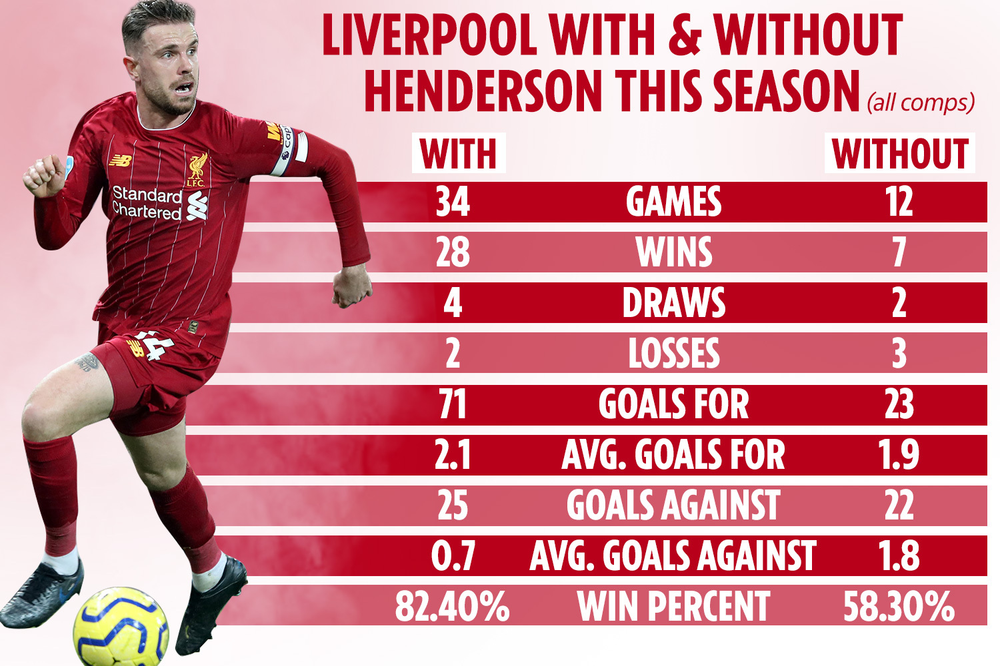

Thông tin cơ bản
Jordan Brian Henderson là một cầu thủ bóng đá người Anh đang chơi cho câu lạc bộ ở Premier League Liverpool và đội tuyển Anh. Anh thường chơi như một tiền vệ trung tâm cho cả câu lạc bộ và quốc gia.
Ngày/nơi sinh: 17 tháng 6, 1990 (30 tuổi), Sunderland, Vương Quốc Anh
Chiều cao: 1,82 m
Cân nặng: 80 kg
Vợ: Rebecca Burnett (kết hôn 2014)
Đội hiện tại: Câu lạc bộ Bóng đá Liverpool (#14 / Tiền vệ), Đội tuyển Bóng đá Quốc gia Anh (Tiền vệ)
Sự nghiệp cầu thủ
Henderson bắt đầu sự nghiệp của mình tại Sunderland vào năm 2008, với một khoản cho mượn tại Coventry City năm 2009 trước khi chuyển đến Liverpool vào năm 2011. Anh trở thành đội trưởng của Liverpool vào năm 2015 sau sự ra đi của Steven Gerrard và giành chiến thắng ở Chung kết UEFA Champions League 2019 và Siêu cúp châu Âu 2019
Vào năm 2010, Henderson đã giành được suất đầu tiên của mình cho đội tuyển Anh, trước đó anh là đội trưởng U-21 quốc gia. Anh đã đại diện cho quốc gia tại UEFA Euro 2012 và 2016 cùng với World Cup 2014 và 2018.